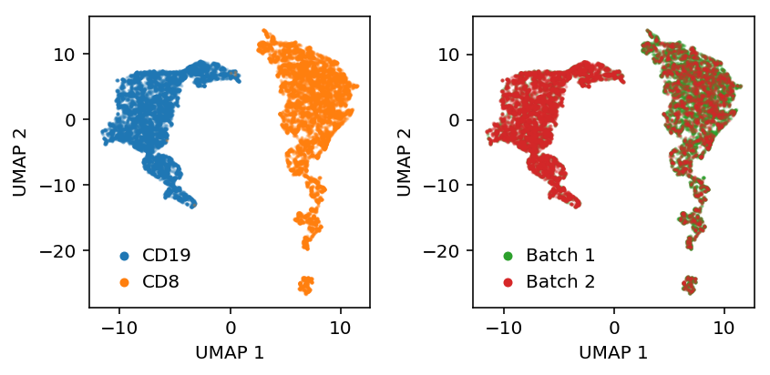

Single cell alignment
Table of Contents
Introduction
Single cell alignment is the problem of identifying common biological variation between different single cell measurements. The goal of alignment is to jointly analyze multiple data sets, maximizing power to detect biological differences by increasing sample sizes.
One obvious application of alignment is to perform batch correction, where each data set corresponds to a batch. With the advent of large atlases of single cells (Zheng et al 2016, Human Cell Atlas), a more pressing application is to allow researchers to quickly align novel single cell experiments with millions of previously assayed cells.
Butler et al 2018 propose a two-step approach to solve the single cell alignment problem. First, they project all of the data into a common basis using generalized canonical correlation analysis (Hotelling et al 1936, Kettenring 1971). Second, they align cells across data sets to each other along the canonical correlation vectors using dynamic time warping (Berndt and Clifford 1994). DTW is a special case of sequence alignment (Needleman and Wunsch 1970), where mismatches/indels are not penalized, and the substitution cost is Euclidean distance.
Here, we develop an alternative approach based on adversarial training of a deep generative model. Our main contributions are:
- We propose the negative cross-entropy loss as a quantitative metric for the quality of the alignment. Intuitively, after aligning the data (in low dimensional space), it should not be possible to successfully classify points as coming from different data sets.
- We propose an adversarial auto-encoding architecture (Makhzani et al. 2015) which simultaneously: (1) explains the observed data (by maximizing the evidence lower bound) and removes data-set specific differences (by maximizing the cross-entropy loss), (2) learns a separate generative model of the data to allow incremental alignment of novel datasets without using the original training data.
- We show that our method performs well using the alignment score proposed by Butler et al 2018, and outperforms it in terms of negative cross-entropy loss.
- We show our method is robust to non-overlapping cell subpopulations.
- We demonstrate our method scales by training models for >450,000 human peripheral blood mononuclear cells and >1,000,000 mouse brain cells, and then aligning held out datasets to them. We provide our pre-trained models as the basis for other researchers to align novel experimental data.
Methods
Variational auto-encoder
Suppose we want to fit a latent variable model:
\[ \mathbf{x}_i \mid \mathbf{z}_i, \theta \sim g(\mathbf{z}_i, \theta) \]
\[ \mathbf{z}_i \sim N(0, \sigma^2 \mathbf{I}) \]
where \(\mathbf{x}_i \in \mathbb{R}^p\), \(\mathbf{z}_i \in \mathbb{R}^d\), \(d \ll p\).
Assuming \(g(\mathbf{z_i}) = \mathbf{W z}_i\) and marginalizing over \(\mathbf{z}_i\), we recover PPCA (Tipping 1999).
Here, we instead pursue an approach where \(g\) is parameterized by a neural network (Kingma and Welling 2014, Rezende et al 2014, Titsias and Lázaro-Gredilla 2014). There are several reasons to do this:
- We want to learn a nonlinear embedding of the data. This is achieved by replacing the affine transform \(\mathbf{W Z}\) with a feed forward neural network, which is a recursive generalized linear model (Mohammed 2015).
- We want to operate on data which cannot fit in memory. This is achieved by using an inference network (Dayan et al 1995). The key idea is that we replace the \(n \times d\) matrix \(\mathbf{W}\) and \(d \times p\) matrix \(\mathbf{Z}\) with a neural network. The parameters of the neural network take the place of \(\mathbf{W}\), and the output of the neural network is \(\mathbf{z}_i\). Then, the size of the network is constant in the size of the data, and we can optimize the loss function using stochastic optimization over minibatches of data.
- We want to impose non-trivial constraints on the posterior. In our setting, we assume we have labels \(y_i\), and the goal is to impose the constraint that the points with different labels are not distinguishable from each other. This is not readily expressed as a prior distribution on \((\mathbf{z}_i, y_i)\).
We assume the following generative model:
\[ x_{ij} \mid \lambda_{ij} \sim \mathrm{Poisson}(\lambda_{ij}) \]
\[ \lambda_{ij} \mid z_i \sim [\pi(\mathbf{z}_i)]_j \delta_0(\cdot) + (1 - [\pi(\mathbf{z}_i)]_j)[\mu(\mathbf{z}_i)]_j \]
where \(\pi(\cdot), \mu(\cdot)\) are \(p\)-vector outputs of a neural network, termed the decoder.
This is a zero-inflated Poisson variational autoencoder (ZIPVAE). Previous studies have instead chosen the zero-inflated negative binomial likelihood, yielding a ZINBVAE (Lopez et al 2018, Grønbech et al 2018). This choice assumes unexplained technical heterogeneity beyond Poisson sampling noise, and needs to be justified from the data.
The inference goal of the fitted model is to estimate \(p(\mathbf{z}_i \mid \mathbf{x}_i)\). This posterior is non-conjugate to the likelihood, so we use variational inference to estimate an approximate posterior. Importantly, the model was parameterized using a neural network, so we need to also parameterize the approximate posterior using a neural network.
\[ q(\mathbf{z}_i \mid \mathbf{x}_i) = \mathrm{N}(\mu(\mathbf{x}_i), \sigma^2(\mathbf{x}_i) \mathbf{I}) \]
where \(\mu(\cdot), \sigma^2(\cdot)\) are \(d\)-vector outputs of a neural network, termed the encoder.
The evidence lower bound (ELBO) is:
\[ p(\mathbf{X}) \geq \sum_i \mathbb{E}_q[\ln p(x_i \mid z_i)] - \mathcal{KL}\left(q(z_i \mid x_i) \Vert p(z_i)\right) \]
We use the reparameterization trick to rewrite the expectations over \(q\) as sums over samples from standard Gaussians, yielding a stochastic objective function. We optimize the objective using gradient descent.
The resulting model is known as a variational autoencoder (VAE). In the case where both the encoder and decoder are affine transforms, we recover PPCA (as described above). In the case where the encoder is affine but the decoder is a neural network, we recover Robust PCA (Candés et al. 2009, Dai et al 2017).
Adversarial alignment
We want to enforce the constraint that data which reflect the same underlying biological state are not distinguishable on the basis of which data set they came from. This means the model must simultaneously learn the underlying biological state as well as "forget" systematic differences between different data sets.
To achieve this goal, we observe that the VAE described above learns a non-linear mapping from observed data \(\mathbf{x}_i\) to a low dimensional latent variable \(\mathbf{z}_i\) describing the biological state. We need the encoder to not use systematic differences between data sets in this mapping.
This constraint is not readily expressible as a prior on \(\mathbf{z}_i\), but it is expressible as the opposite of a classification problem on \(\mathbf{z}_i\). In essence, rather than minimizing the cross-entropy loss:
\[ l(\mathbf{z}_i, y_i) = y_i \ln(f(\mathbf{z}_i)) \]
where \(f\) is the classifier, we want to maximize it. This is related to maximum entropy (Jaynes 1957a, Jaynes 1957b) and minimum discrimination information (Kullback and Liebler 1951).
This suggests jointly optimizing a combined loss function:
\[ \mathcal{L} = \sum_i \mathrm{ELBO}(\mathbf{x}_i) - l(\mathbf{z}_i, y_i) \]
There are two major challenge in optimizing this loss function:
- We need to jointly train the classifier \(f\) and the the VAE \(p, q\). In principle, this could be done by simply performing gradient descent on the full objective function wrt. the parameters of \(f, p, q\). This approach is related to adversarial autoencoders (Makhzani et al. 2015), where an adversarial discriminator network is used to enforce constraints on a deep generative model.
- We need to balance the two parts of the objective function. The optimal way to fool the discriminator is to randomly place points in the low dimensional space, but the optimal way to describe the data is to model the systematic technical differences between data sets. In previous work, this was done by training each component alternately.
Incremental training
One further challenge is how to update the model with new data (e.g., a new experimental data set). After successfully fooling the adversary, the resulting low dimensional representation is "one dataset", reducing the problem into aligning two data sets. However, all of the original data would be required to train the model from scratch.
Instead, our key idea is to add to use a generative adversarial network (GAN; Goodfellow 2014) in the architecture. In a GAN, a generator network \(G\) and discriminator network \(D\) are trained to optimize a minimax game:
\[ \min_G \max_D E_{\hat{p}} [\ln D(\mathbf{x})] + E_p [\ln(1 - D(G(\mathbf{z})))] \]
where \(\hat{p}\) is the empirical distribution of the data, and \(p\) is the distribution of data generated by \(G\). Typically, \(G\) maps isotropic Gaussian noise to generated data points. The inference goal is to learn \(G\), and the adversary \(D\) is used to push it towards the distribution \(\hat{p}\).
Here, we use the encoder network of the VAE as the generator, and use the dataset of origin as the labels for the adversary, yielding a simple adversarial autoencoder (Makhzani et al 2015). We can then train the model in phases in each minibatch:
- Train the encoder and decoder to learn the low dimensional manifold describing the data
- Train the adversary to classify the latent points based on the labels
- Train the encoder to fool the adversary
Simultaneouly, we can train a generator network which can generate latent samples matching the encoder. To train this network, we add a further discriminator network which tries to distinguish real outputs from the encoder network \(q(\mathbf{z} \mid \mathbf{z})\) from the generator outputs.
With the trained generator network, we can incrementally train the model on new data sets without needing the original data.
Results
ZIPVAE sanity check
First, check that the ZIPVAE works. Simulate some low-rank Poisson data, thin the counts to produce training and validation data, and evaluate the validation set log likelihood.
\[ \mathbf{l}_{ik} \sim \mathcal{N}(0, \sigma^2) \] \[ \mathbf{f}_{kj} \sim \mathcal{N}(0, \sigma^2) \] \[ \ln\lambda_{ij} = l_{ik} f_{kj} \] \[ x_{ij} \sim \mathrm{Poisson}(\lambda_{ij}) \] \[ y_{ij} \sim \mathrm{Binomial}(x_{ij}, 0.5) \] \[ \tilde{y}_{ij} = x_{ij} - y_{ij} \]
def simulate_pois(n, p, rank, eta_max=None, seed=0): np.random.seed(seed) l = np.random.normal(size=(n, rank)) f = np.random.normal(size=(rank, p)) eta = l.dot(f) if eta_max is not None: # Scale the maximum value eta *= eta_max / eta.max() x = np.random.poisson(lam=np.exp(eta)) return x, eta def train_test_split(x, p=0.5): train = np.random.binomial(n=x, p=p, size=x.shape) test = x - train return train, test def pois_llik(lam, train, test): lam *= test.sum(axis=0, keepdims=True) / train.sum(axis=0, keepdims=True) return st.poisson(mu=lam).logpmf(test).sum() def generalization_score_oracle(train, test, eta): return pois_llik(np.exp(eta), train, test) def generalization_score_zipvae(train, test, *args): import scaa import torch import torch.utils.data n, p = train.shape training_data = torch.utils.data.DataLoader(torch.tensor(train, dtype=torch.float), batch_size=25, shuffle=False) with torch.cuda.device(0): model = scaa.modules.ZIPVAE(p, 10).fit(training_data, lr=1e-2, max_epochs=10, verbose=False) lam = model.denoise(training_data) return pois_llik(lam, train, test) def evaluate_generalization(num_trials): result = dict() for method in ['oracle', 'zipvae']: result[method] = [] for trial in range(num_trials): x, eta = simulate_pois(n=500, p=1000, rank=3, eta_max=3, seed=trial) train, test = train_test_split(x) score = globals()[f'generalization_score_{method}'](train, test, eta) result[method].append(score) result = pd.DataFrame.from_dict(result) result.index.name = 'trial' return result
<<imports>> <<zipvae-sanity-check>> res = evaluate_generalization(num_trials=100) res.to_csv('/project2/mstephens/aksarkar/projects/singlecell-ideas/data/alignment/generalization.txt.gz', sep='\t', compression='gzip')
sbatch --partition=gpu2 --gres=gpu:1 --time=60:00 #!/bin/bash source activate singlecell python /project2/mstephens/aksarkar/projects/singlecell-ideas/code/zipvae-generalization.py
Submitted batch job 51311689
Read the results.
res = pd.read_table('/project2/mstephens/aksarkar/projects/singlecell-ideas/data/alignment/generalization.txt.gz', index_col=0)
Plot the results.
methods = ['oracle', 'zipvae'] plt.clf() plt.gcf().set_size_inches(3, 3) for j, method in enumerate(methods): y = res[method] f = st.gaussian_kde(y) py = f(y) x = j + .2 / py.max() * np.random.uniform(-py, py) plt.scatter(x, y, c='k', s=4) plt.xticks(range(len(methods)), methods) plt.xlim(-.5, len(methods) - .5) plt.xlabel('Method') _ = plt.ylabel('Validation set log likelihood')
ZIPVAE on known mixture
Embed a known mixture of sorted cells, then look at whether they are linearly separable in the embedding space.
cd8 = scipy.io.mmread('/project2/mstephens/aksarkar/projects/singlecell-ideas/data/10xgenomics/cd8+_cytotoxic_t_cells/filtered_matrices_mex/hg19/matrix.mtx.gz').tocsr() cd19 = scipy.io.mmread('/project2/mstephens/aksarkar/projects/singlecell-ideas/data/10xgenomics/cd19+_b_cells/filtered_matrices_mex/hg19/matrix.mtx.gz').tocsr()
Mix the cells and filter lowly expressed genes.
mix = ss.hstack((cd8, cd19)).tocsr() mix = mix[((mix > 0).mean(axis=1) >= 0.25).A.ravel()].T.astype(np.int) mix.shape
(20294, 404)
Load the data.
training_data = torch.utils.data.DataLoader( scaa.dataset.SparseDataset(mix), batch_size=100, num_workers=1, pin_memory=True, shuffle=True, ) eval_data = torch.utils.data.DataLoader( scaa.dataset.SparseDataset(mix), batch_size=100, num_workers=1, pin_memory=True, shuffle=False, )
Fit the model and get the embedding.
with torch.cuda.device(0): model = scaa.modules.ZIPVAE(mix.shape[1], 10).fit(training_data, max_epochs=2, verbose=True) with torch.set_grad_enabled(False): z = torch.cat([model.encoder.forward(x)[0] for x in eval_data]).numpy()
Label the cells.
y = np.zeros(mix.shape[0]) y[:cd8.shape[1]] = 1 y = y.astype(bool)
Plot UMAP of the latent space.
embed = umap.UMAP(n_neighbors=5, metric='euclidean').fit_transform(z)
plt.clf() plt.gcf().set_size_inches(3, 3) plt.scatter(embed[y,0], embed[y,1], s=1, c='r', label='CD19', alpha=0.25) plt.scatter(embed[~y,0], embed[~y,1], s=1, c='b', label='CD8', alpha=0.25) plt.legend(frameon=False, handletextpad=0, markerscale=4) plt.xlabel('UMAP 1') _ = plt.ylabel('UMAP 2')
Discriminator sanity check
Make sure the discriminator can classify in count space.
cd8 = scipy.io.mmread('/project2/mstephens/aksarkar/projects/singlecell-ideas/data/10xgenomics/cd8+_cytotoxic_t_cells/filtered_matrices_mex/hg19/matrix.mtx.gz').tocsr() cd19 = scipy.io.mmread('/project2/mstephens/aksarkar/projects/singlecell-ideas/data/10xgenomics/cd19+_b_cells/filtered_matrices_mex/hg19/matrix.mtx.gz').tocsr()
Mix the cells and filter lowly expressed genes.
mix = ss.hstack((cd8, cd19)).tocsr() mix = mix[((mix > 0).mean(axis=1) >= 0.25).A.ravel()].T.astype(np.int) mix.shape
(20294, 404)
Label the cells.
y = np.zeros(mix.shape[0]) y[:cd8.shape[1]] = 1 y = y.astype(bool)
Split the cells.
train = np.zeros(mix.shape[0], dtype=np.bool) train[:int(cd8.shape[1] * .9)] = 1 train[cd8.shape[1]:cd8.shape[1] + int((mix.shape[0] - cd8.shape[1]) * .9)] = 1 val = ~train
train[y].sum(), train[~y].sum(), val[y].sum(), val[~y].sum()
(9188, 9076, 1021, 1009)
Train the discriminator.
data = torch.tensor(mix.A[train], dtype=torch.float) val_data = torch.tensor(mix.A[val], dtype=torch.float) labels = torch.tensor(y[train].astype(int), dtype=torch.long) val_labels = torch.tensor(y[val].astype(int), dtype=torch.long) f = scaa.modules.Discriminator(input_dim=mix.shape[1], num_classes=2) opt = torch.optim.Adam(f.parameters()) loss_fn = torch.nn.NLLLoss() for i in range(100): opt.zero_grad() loss = loss_fn(f.forward(data), labels) val_loss = loss_fn(f.forward(val_data), val_labels) print(f'[{i}] {loss} {val_loss}') loss.backward() opt.step()
loss.detach().numpy(), val_loss.detach().numpy()
(array(4.1733852e-05, dtype=float32), array(0.00011137, dtype=float32))
Evaluate the discriminator.
with torch.set_grad_enabled(False): ay = f.forward(val_data).numpy() py = ay / ay.sum() skme.average_precision_score(y[val], py[:,0]), skme.roc_auc_score(y[val], py[:,0])
(1.0, 1.0)
ZIPAAE sanity check
Simulate homogeneous low rank data and randomly split it into two groups (so differences are just sampling variation). The AAE should still be able to accurately model the data.
<<imports>> def evaluate(num_trials): result = [] for trial in range(num_trials): train, test = scaa.benchmark.train_test_split(x) y = (np.random.uniform(size=x.shape[0]) < 0.5).astype(np.int) result.append([trial, scaa.benchmark.generalization_score_oracle(train, test, eta=eta), scaa.benchmark.generalization_score_zipvae(train, test), scaa.benchmark.generalization_score_zipaae(train, test, y=y), ]) result = pd.DataFrame(result) result.columns = ['trial', 'Oracle', 'ZIPVAE', 'ZIPAAE'] return result res = evaluate(num_trials=20) res.to_csv('/project2/mstephens/aksarkar/projects/singlecell-ideas/data/alignment/zipaae-generalization.txt.gz', compression='gzip', sep='\t')
sbatch --partition=gpu2 --gres=gpu:1 --time=60:00 --job-name=zipaae #!/bin/bash source activate singlecell python /project2/mstephens/aksarkar/projects/singlecell-ideas/code/zipaae-generalization.py
Submitted batch job 51428443
Read the results.
res = pd.read_table('/project2/mstephens/aksarkar/projects/singlecell-ideas/data/alignment/zipaae-generalization.txt.gz', index_col=0)
Plot the results.
methods = ['Oracle', 'ZIPVAE', 'ZIPAAE'] plt.clf() plt.gcf().set_size_inches(3, 3) for j, method in enumerate(methods): y = res[method] f = st.gaussian_kde(y) py = f(y) x = j + .2 / py.max() * np.random.uniform(-py, py) plt.scatter(x, y, c='k', s=4) plt.xticks(range(len(methods)), methods) plt.xlim(-.5, len(methods) - .5) plt.xlabel('Method') _ = plt.ylabel('Validation set log likelihood')
ZIPAAE on known mixtures
Randomly split a knowm mixture of sorted cells into two groups, then fit the AAE to embed them.
cd8 = scipy.io.mmread('/project2/mstephens/aksarkar/projects/singlecell-ideas/data/10xgenomics/cd8+_cytotoxic_t_cells/filtered_matrices_mex/hg19/matrix.mtx.gz').tocsr() cd19 = scipy.io.mmread('/project2/mstephens/aksarkar/projects/singlecell-ideas/data/10xgenomics/cd19+_b_cells/filtered_matrices_mex/hg19/matrix.mtx.gz').tocsr()
Mix the cells and filter lowly expressed genes.
mix = ss.hstack((cd8, cd19)).tocsr() mix = mix[((mix > 0).mean(axis=1) >= 0.25).A.ravel()].T.astype(np.int) mix.shape
(20294, 404)
Label the cells.
y = np.zeros(mix.shape[0]) y[:cd8.shape[1]] = 1 y = y.astype(bool)
To make the problem harder, correlate the "batch" label with cell type.
batch = (np.random.uniform(size=mix.shape[0]) < np.where(y, .25, .75)).astype(int)
Embed the data in the ambient space.
embed = umap.UMAP(n_neighbors=5, metric='euclidean').fit_transform(mix)
plt.clf() plt.set_cmap('Dark2') fig, ax = plt.subplots(1, 2) fig.set_size_inches(6, 3) ax[0].scatter(embed[y,0], embed[y,1], s=1, c='C0', label='CD19', alpha=0.25) ax[0].scatter(embed[~y,0], embed[~y,1], s=1, c='C1', label='CD8', alpha=0.25) leg = ax[0].legend(frameon=False, handletextpad=0, markerscale=4) for h in leg.legendHandles: h.set_alpha(1) b = batch.astype(bool) ax[1].scatter(embed[b,0], embed[b,1], s=1, c='C2', label='Batch 1', alpha=0.25) ax[1].scatter(embed[~b,0], embed[~b,1], s=1, c='C3', label='Batch 2', alpha=0.25) leg = ax[1].legend(frameon=False, handletextpad=0, markerscale=4) for h in leg.legendHandles: h.set_alpha(1) for a in ax: a.set_xlabel('UMAP 1') a.set_ylabel('UMAP 2') plt.tight_layout()
Load the data.
training_data = torch.utils.data.DataLoader( scaa.dataset.SparseDataset(mix), batch_size=100, num_workers=4, pin_memory=True, shuffle=True, ) batch_data = torch.utils.data.DataLoader( torch.tensor(batch, dtype=torch.long), batch_size=100, num_workers=4, pin_memory=True, shuffle=True, ) eval_data = torch.utils.data.DataLoader( scaa.dataset.SparseDataset(mix), batch_size=100, num_workers=1, pin_memory=True, shuffle=False, )
Fit the model.
with torch.cuda.device(0): model = scaa.modules.ZIPAAE(input_dim=mix.shape[1], latent_dim=10, num_classes=2).fit(x=training_data, y=batch_data, max_epochs=2, verbose=True)
Get the embedding.
with torch.set_grad_enabled(False): q = model.vae.encoder.cpu() z = torch.cat([q.forward(batch)[0] for batch in eval_data]).numpy()
Plot UMAP of the latent space.
embed = umap.UMAP(n_neighbors=5, metric='euclidean').fit_transform(z)
plt.clf() plt.set_cmap('Dark2') fig, ax = plt.subplots(1, 2) fig.set_size_inches(6, 3) ax[0].scatter(embed[y,0], embed[y,1], s=1, c='C0', label='CD19', alpha=0.25) ax[0].scatter(embed[~y,0], embed[~y,1], s=1, c='C1', label='CD8', alpha=0.25) leg = ax[0].legend(frameon=False, handletextpad=0, markerscale=4) for h in leg.legendHandles: h.set_alpha(1) b = batch.astype(bool) ax[1].scatter(embed[b,0], embed[b,1], s=1, c='C2', label='Batch 1', alpha=0.25) ax[1].scatter(embed[~b,0], embed[~b,1], s=1, c='C3', label='Batch 2', alpha=0.25) leg = ax[1].legend(frameon=False, handletextpad=0, markerscale=4) for h in leg.legendHandles: h.set_alpha(1) for a in ax: a.set_xlabel('UMAP 1') a.set_ylabel('UMAP 2') plt.tight_layout()

Comparison to existing methods
Look at control versus stimulated CD4+ T cells from Kang et al 2018.
Download the data.
mkdir -p GSE96583 cd GSE96583 curl "https://www.ncbi.nlm.nih.gov/geo/download/?acc=GSE96583&format=file" | tar xf - curl "https://www.ncbi.nlm.nih.gov/geo/download/?acc=GSE96583&format=file&file=GSE96583_genes.txt.gz" -o GSE96583_genes.txt.gz
Read the data.
control = scipy.io.mmread('/project2/mstephens/aksarkar/projects/singlecell-ideas/data/GSE96583/GSM2560248_2.1.mtx.gz') stim = scipy.io.mmread('/project2/mstephens/aksarkar/projects/singlecell-ideas/data/GSE96583/GSM2560249_2.2.mtx.gz')
First, ask whether batches can be classified. (Aside: this seems like a case where proper experimental design would eliminate the problem.)
mix = ss.hstack([control, stim]).tocsc() mix = mix[((mix > 0).mean(axis=1) >= 0.25).A.ravel()].T.astype(np.int) mix.shape
(29065, 482)
Label the cells.
y = np.zeros(mix.shape[0])
y[:control.shape[1]] = 1
m = sklm.LogisticRegressionCV(cv=4, fit_intercept=True, n_jobs=-1,).fit(mix, y) m.score(mix, y)
0.9884741097539996
Look at the embedding.
log_counts = ss.csr_matrix((np.log(mix.data), mix.indices, mix.indptr)) z = skd.TruncatedSVD(n_components=20).fit_transform(log_counts.T) embed = umap.UMAP(n_neighbors=10, metric='euclidean').fit_transform(z)
plt.clf() plt.gcf().set_size_inches(3, 3) b = y.astype(bool) plt.scatter(embed[b,0], embed[b,1], s=1, c='C0', label='Control', alpha=0.25) plt.scatter(embed[~b,0], embed[~b,1], s=1, c='C1', label='Stimulated', alpha=0.25) leg = plt.legend(frameon=False, handletextpad=0, markerscale=4) for h in leg.legendHandles: h.set_alpha(1) plt.xlabel('UMAP 1') plt.ylabel('UMAP 2')
Text(0,0.5,'UMAP 2')
Align the data using scVI.
import scvi.dataset import scvi.models import scvi.inference X = scvi.dataset.GeneExpressionDataset(*scvi.dataset.GeneExpressionDataset.get_attributes_from_matrix(mix, labels=y)) model = scvi.models.VAEC(X.nb_genes, n_batch=X.n_batches, n_labels=X.n_labels) infer = scvi.inference.UnsupervisedTrainer(model=model, gene_dataset=X) infer.train(n_epochs=10, lr=1e-2)
qz = infer.train_set.get_latent()
Align the data using AAE.
qz = scaa.align.align(mix, y, latent_dim=10, max_epochs=2, verbose=True)
Look at the disciminating in the embedding.
m = sklm.LogisticRegressionCV(cv=4, fit_intercept=True, n_jobs=-1,).fit(qz, y) m.score(qz, y)
0.9775331154309307
Look at the AAE embedding.
embed = umap.UMAP(n_neighbors=5, metric='euclidean').fit_transform(qz)
plt.clf() plt.gcf().set_size_inches(4, 3) plt.set_cmap('Dark2') b = y.astype(bool) plt.scatter(embed[b,0], embed[b,1], s=1, c='C0', label='Control', alpha=0.25) plt.scatter(embed[~b,0], embed[~b,1], s=1, c='C1', label='Stimulated', alpha=0.25) leg = plt.legend(frameon=False, handletextpad=0, markerscale=4, loc='center left', bbox_to_anchor=(1, .5)) for h in leg.legendHandles: h.set_alpha(1) plt.xlabel('UMAP 1') plt.ylabel('UMAP 2') plt.tight_layout()